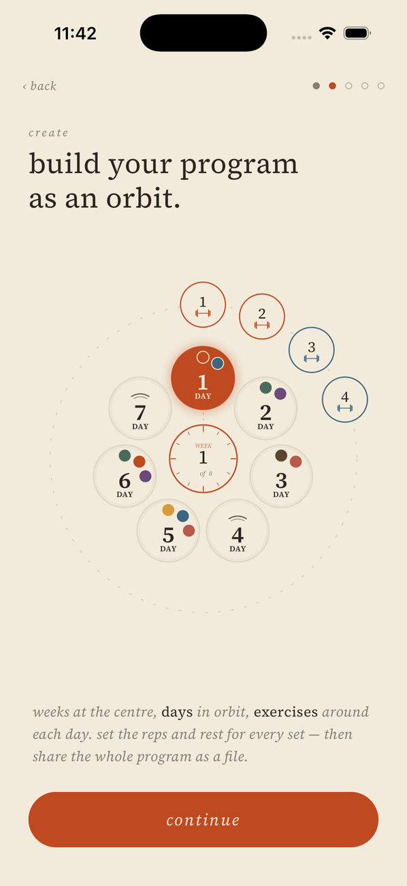
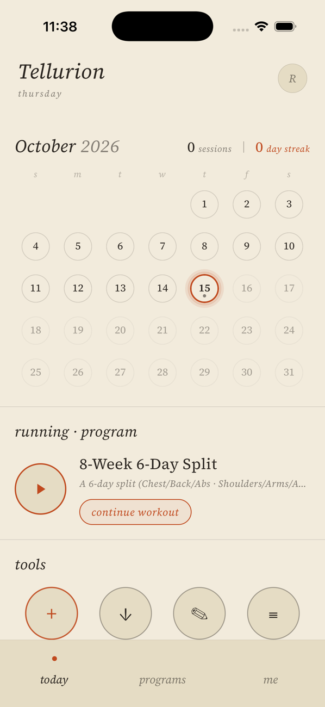
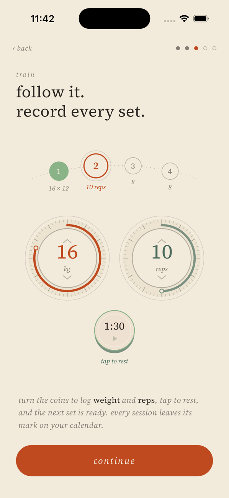

a workout app for trainers and the people they train
Build a training program as an orbit. Record every set.
Tellurion lays a program out the way you think about it: the week in the centre, days around it, exercises around each day. Then it gets out of the way while you train.
in beta for iPhone · not yet on the App Storecreate
A whole program on one screen
Add weeks, set which days you train, and place exercises around each day. Choose the reps and the rest for every set. Each muscle group has its own color, so you can read a week at a glance.

share
Send it as a file
A program is one file. Send it to a client or a training partner by message, mail or AirDrop, and they open it in Tellurion with the weeks, days, sets and rest times exactly as you built them.

train
Two dials and a rest button
Turn one dial for weight and one for reps, tap to rest, and the next set is ready. Every session is saved to your calendar, so you can see what you lifted last time.

Yours, on your phone
No account and no sign-in. Your programs and your training log are stored on your iPhone, and you can back the log up to a file whenever you like.
Private by default
Tellurion sends nothing about your training anywhere. Anonymous usage counts are off unless you switch them on. Read the privacy policy.
Free during the beta
The beta is free. Building programs, sharing them as files and recording sessions will stay free after it.